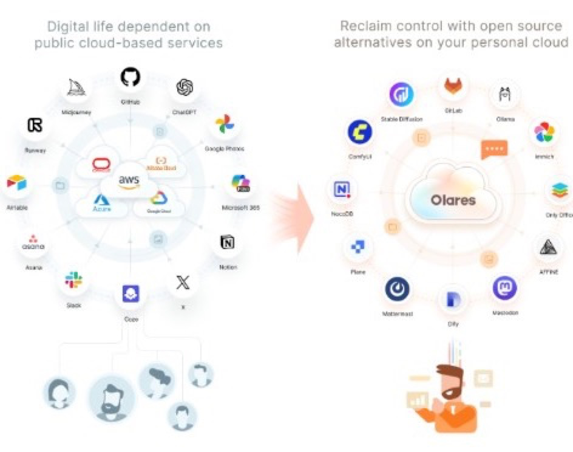

Olares OS: An Always-On, Natural-Language-Driven OS for Personal AI
We believe everyone will have a Personal Agent—handling work, daily tasks, personal information, and digital life across every device—and a Personal Cloud is the always-on home built to run it.
Olares is an open-source operating system for personal cloud. We are a software company dedicated to building an open-source personal cloud OS.
A personal cloud provides a single, always-on, always-accessible interface and a unified context execution environment for a person and all of their AI devices.
- Always-on: Available 24/7, from anywhere.
- Unified context execution environment:
- Centralizes scattered data for true ownership.
- Provides the execution environment for continuous, background multi-AI operations.
- AI+Smart devices: Connects phones, computers, glasses, watches, rings, etc.
- A traditional personal computer is built for local intranet use, and is unsuitable for uninterrupted 24/7 service.
- A personal cloud requires a fundamentally different operating system to serve different user needs.
This shift is driven by three essentials:

Competitive local LLMs
Open-weight models now match last year's SOTA on consumer hardware.
Production-ready open-source apps
A mature ecosystem of alternatives to Google, Microsoft, and OpenAI services (Ollama, ComfyUI, Mattermost, GitLab, and more).
Enterprise-grade cloud-native infrastructure
Kubernetes, service mesh, and GPU scheduling proven at datacenter scale.
Olares integrates these into a secure, user-friendly execution environment.
Today, users can only choose between a handful of giants: Google, Meta, Apple, OpenAI, Microsoft for cloud services.
For 90% of users, this will remain the easiest option. But for the 10% of users who are specifically power users, homelabbers and small businesses, they need an alternative:
Privacy & compliance
Full ownership and control of personal data.
Performance
Low-latency AI inference.
Olares introduces personal cloud as a necessary alternative to the status quo.
We are on the verge of an explosive increase in demand for compute power.
Projected growth in individual compute requirements.
Global public cloud revenue annually (10× growth).
Personal cloud market capturing just 10% of the total.
Currently, consumer hardwares lack the power to run the best AI models. This will change in 2026 based on a clear historical trend.
The 2027 takeoff
By late 2026, the best AI tools from 2025 will run locally on consumer graphics cards.
All models that supported massive $100 million ARR scenarios in 2025 will run locally on consumer graphics cards.
AI is getting smaller and better
Every year, the size of top AI models decreases by 10 times. New open-source models for consumer hardware now match the performance of last year's SOTA models.